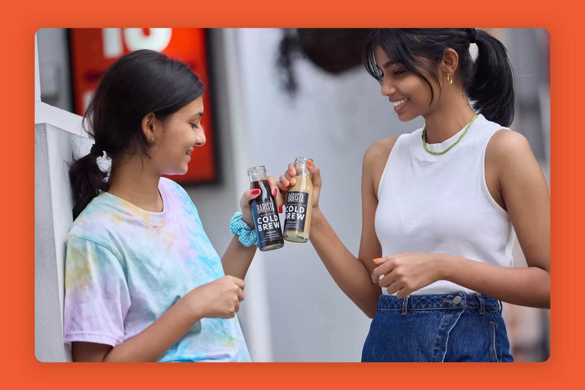
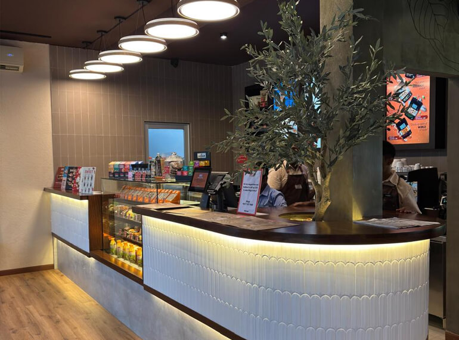

Training and professional standards
Skilled baristas and branded customer service are part of a more responsible hospitality experience because they make consistency repeatable.
This page establishes a cleaner editorial framework for Barista's sustainability story, centered on people, operating discipline, and thoughtful expansion.

Skilled baristas and branded customer service are part of a more responsible hospitality experience because they make consistency repeatable.
Outlets should feel approachable, durable, and commercially sensible rather than trend-led for a moment.
App support, e-shop, drive-thru, and new formats show how innovation can improve convenience and operational clarity.
When the brand expands this far, sustainability should not read as a detached corporate add-on. It should feel like the natural next chapter of how Barista trains people, develops formats, and improves everyday operations.

Barista craft, service training, and stronger hospitality pathways create better long-term teams.
Technology and better format choices can reduce friction for both staff and guests.
Scale should strengthen the brand footprint without diluting the quality of the experience.